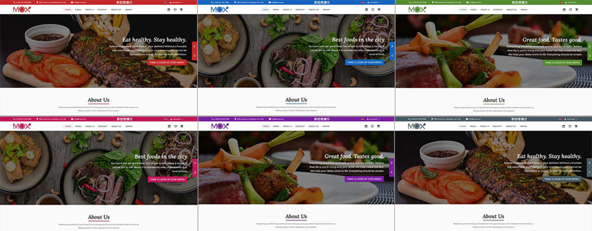

Hello everyone!
Thank you for purchasing my template. If you have any questions that are beyond the scope of this help file, please feel free to email me. Thanks so much!
Although Mox can be run without any development experience, it would be much easier if you already have some. The following instructions allow you to run a local copy on your machine.
If you have not yet installed nodejs, please Download and globally install nodejs : https://nodejs.org
Note: download Recommended For Most Users version
A detailed instruction on how to install NodeJS is available here.
After installing NodeJS there is just one thing left to do: Simply install Typings globally by running the command npm install -g typings and wait for npm to do the dirty work.
Note: Make sure you have Node version >= 12.20.0 and NPM >= 6.
Installing Angular-CLI globally is as simple as running this simple command: npm install -g @angular/cli
After the tools is installed, go inside of the template directory and install dependencies:
Run npm install to install node dependencies defined in package.json.
To run a local copy in development mode, execute ng serve and go to http://localhost:4200 in your browser.
To run the local copy in production mode and build the sources, execute ng build --prod. This will builds a production version of the application. All html,css and js code is minified and put to dist/browser folder. The contents of this folder you can to put to your production server when publishing the application.
The directory structure of this template is as follows:
mox/ ├──src/ * source files that will be compiled to javascript │ │ │ ├──test.ts * test │ │ │ ├──styles.scss * globally stylesheet │ │ │ ├──index.html * application layout │ │ │ ├──main.ts * entry file for our browser environment | | │ ├──main.server.ts * entry file for our server environment │ │ │ ├──polyfills.ts * polyfills file │ │ │ ├──favicon.ico * favicon │ │ │ ├──app/ * application code - our working directory │ │ │ │ │ ├──app.component.ts * main application component │ │ │ │ │ ├──app.component.html * main application html file │ │ │ │ │ ├──app.component.scss * main application styles │ │ │ │ │ ├──app.module.ts * main application module │ │ │ │ │ ├──app-routing.module.ts * application routes │ │ │ │ │ ├──app.service.ts * application service │ │ │ │ │ ├──app.models.ts * application models │ │ │ │ │ ├──app.settings.ts * application settings data │ │ │ │ │ ├──admin/ * admin pages components, place where you can create pages and fill them with components │ │ │ │ │ ├──pages/ * webiste pages components, place where you can create pages and fill them with components │ │ │ | │ ├──shared/ * shared modules folder │ │ │ │ │ └──theme/ * template global components/directives/pipes/styles and utils │ │ │ ├──environments/ * environments │ └──assets/ * static assets are served here │ ├──e2e/ * will be used for end-to-end tests to ensure functionality for users before deploying ├──angular.json * used for configuration of project specific settings ├──browserslistrc * browserslistrc specify the browsers ├──karma.conf.js * config file for karma testing framework ├──package.json * contains all dependencies used for production and development ├──README.md * read me file ├──server.ts * server-side-rendering file ├──tsconfig.app.json * config app for typescript ├──tsconfig.json * config for typescript ├──tsconfig.server.json * config server for typescript ├──tsconfig.spec.json * config spec for typescript └──tslint.json * Angular-CLI includes an automatic Typescript-Linter, which can be configured with this file
In our template we tried to separate the theme layer and presentation layer. We believe most of other templates have them combined. That’s why when you start developing using them, it gets very hard for you to remove things you don’t need.
We tried to make the process of skin color customization as easy as possible.
By default Mox has 6 built-in skin color: red (default), blue, green, pink, purple and grey.
For change the skin color of theme do the following:
src\app\app.settings.ts file.'red''green'If you want to create your own skin color, please do the following:
src\app\theme\styles\skins folder, for example: _orange.scss .src\app\theme\styles\skins\_red.scss to src\app\theme\styles\skins\_orange.scss .
$orange-primary: mat.define-palette(mat.$orange-palette, 800, 50, 900);
$orange-accent: mat.define-palette(mat.$grey-palette, 300, 100, 500);
$orange-warn: mat.define-palette(mat.$red-palette, 500, A200, 800);
$orange-theme: mat.define-light-theme($orange-primary, $orange-accent, $orange-warn);
src\app\theme\styles\_theme.scss file and add new line to .app class :
.app{
...
&.orange{
@import "skins/orange";
@include mat.all-component-colors($orange-theme);
@include theme-reset($orange-theme);
}
...
}
Mox uses Angular Component Router for navigation.
To generate our first component we simply open up a terminal and navigate in our app. Now we simply run ng g component client and we get a new component in /src/app/client with the following files:
The files client.component.ts and client.component.spec.ts contain the most code, the other files only contain placeholders.
By executing this short command, we just saved ourselves a lot of time creating all these Component files and boilerplate code. Syntax for all commands are available here.
To create a new page without angular-cli, do the following:
src/app/pages. We can call the folder new. src/app/pages/new:
import {Component} from '@angular/core';
@Component({
selector: 'new',
template: `My page content here`
})
export class NewComponent {
constructor() {}
}
This will create a simple Angular component. For more detail please check out official Angular documentation.
src/app/app.module.ts file and import new.component.ts in it
import { NewComponent } from './pages/new/new.component';
and declare it:
@NgModule({
imports: [
......
],
declarations: [
......,
NewComponent,
......
]
})
src/app/app.routing.ts file and import new.component.ts in it
import { NewComponent } from './pages/new/new.component';
and create routing for this page:
export const routes: Routes = [
{
path: '',
component: PagesComponent,
children:[
.....
{ path: 'new', component: NewComponent, data: { breadcrumb: 'New page' } }
.....
]
}
];
To allow for the URL to automatically route to the appropriate component on an Apache server like the internal ng serve server, you need to create a .htaccess file that routes all requests to the index.html file. Here is an example how we did it on our demo-page:
<IfModule mod_rewrite.c>
RewriteEngine On
RewriteBase /
RewriteRule ^index\.html$ - [L]
RewriteCond %{REQUEST_FILENAME} !-f
RewriteCond %{REQUEST_FILENAME} !-d
RewriteRule . /index.html [L]
</IfModule>
A normal Angular application executes in the browser, rendering pages in the DOM in response to user actions. Angular Universal executes on the server, generating static application pages that later get bootstrapped on the client. This means that the application generally renders more quickly, giving users a chance to view the application layout before it becomes fully interactive.
Mox included Angular Universal version too, Server Side Rendering (SSR). For ssr version please do followings:
NOTE: when you will deploy to hosting, make sure to change url variable in src/environments/environment.ssr.ts file
All questions you can send via the contact form HERE.
I answer all questions every day from Monday to Friday from 8:00 to 18:00 (GMT+4) within 24-48h in the order they were received.
Please do not panic if I do not answer too long – I love my buyers and I’ll answer for all questions ;)
More information about the terms of support you can see here: https://themeforest.net/page/item_support_policy
Thanks for reading the Instruction, hope it’s been really helpful and resolved most of your concerns.